“TV is bigger than any story it reports. It’s the greatest teaching
tool since the printing press. It will determine nothing less than the type of people we are.”
- Ferdinand Friendly Wachenheimer (aka Fred W. Friendly), Ford Foundation, 1966
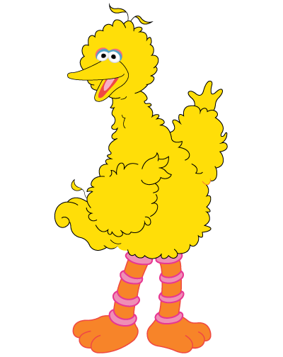
1966
Lloyd Morrisett, future co-founder of Sesame Street, noticed that his young daughter, Sarah, was fascinated by television and especially catchy commercials. He brought this up at a dinner party with friends who wondered whether the power of television could be harnessed to teach preschool children.
1967
Joan Ganz Cooney, friend of Lloyd Morrisett and publicist for WNET/Channel 13, took a leave of absence to interview experts in child development, education and television. Her findings were summarized in a 55-page report that provided substantial evidence for the potential of a new form of children’s television.
“Anyone who has small television viewers at home can testify to the fascination that commercials hold for children. Parents report that their children learn to recite all sorts of advertising slogans, read product names on the screen and sing commercial jingles…
If we accept the premise that commercials are effective teachers, it is important to be aware of their characteristics, the most obvious being frequent repetition, clever visual presentation, brevity, and clarity.”
- Joan Ganz Cooney, "The Potential Uses of Television in Preschool Education”
1968
The Children’s Television Workshop was founded by Lloyd Morrisett and Joan Ganz Cooney to produce an educational show that would be sculpted through research, preschool focus groups and a bit of creativity. The U.S. Department of Education provided half of the $8 million budget needed to sustain the initial research and first season of the show. The Carnegie Corporation, Ford Foundation and Corporation for Public Broadcasting provided the other half. The focus of the show was to make education accessible and engaging for urban or poor preschoolers whose parents might not have the time or resources to provide it for them.
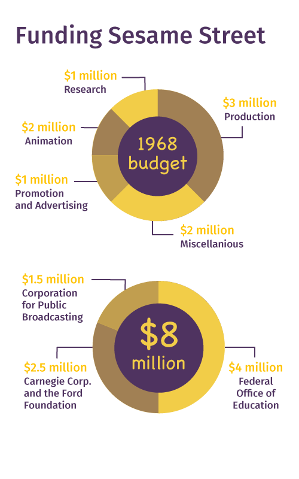
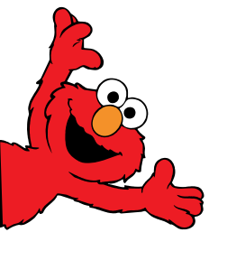
Nov. 10, 1969
The first episode was aired on PBS sponsored by the letters W, S and E, and the numbers 2 and 3. Gordon, a father figure on Sesame Street, introduces Sally, who is new to Sesame Street, to all of the characters.
By the end of the first season, Sesame Street reached about 7 million children a day.
“For a preschool child in Harlem, the street is where the action is. From the vantage point of her apartment, the sidewalk outside must look like utopia... kids hollering, jumping double dutch, running through open hydrants, playing stickball…”
- Jon Stone, original writer and producer of Sesame Street, 1969
1970
Kermit sang about "Bein' Green," which Sesame Street said had a focus on "being comfortable in your own skin, [and] being comfortable with who you are.”
Kermit retired from the Sesame Street cast after the first season. His appearances in cigarette commercials and shows for adults seemed to compromise the integrity of his character as a good-natured teacher on Sesame Street.
The state of Mississippi voted to ban the show because of its multiracial cast. Once the decision was publicized nationally the decision was rescinded.
Meanwhile, Roosevelt Franklin was the first African-American Muppet. He taught students about the geography of Africa and how to avoid drinking poison. Parents wrote to the Children’s Television Workshop to complain that Roosevelt was a negative stereotype of African-American children. They cited his rowdy nature and the fact that his classes closely resembled after-school detention.
1971
Ernie’s Rubber Ducky song soared to No. 11 on the Billboard Top 40 chart. This popularity was unheard of for children’s television at the time.
Nov. 8, 1971
Snuffleupagus was introduced to the show. He was originally cast as Big Bird’s Eeyore-like imaginary friend. Big Bird was frustrated when his attempts to introduce Snuffleupagus to the adult cast failed repeatedly. Snuffleupagus was finally introduced to the rest of the cast in 1985.
Dec. 3, 1978
Christmas Eve on Sesame Street. Channeling the concerns of an urban child, Big Bird worried that Santa would not be able to fit through the small chimney in Gordon and Susan’s brownstone.
1975
Buffy Sainte-Marie was the first Native American to join the Sesame Street cast.
1977
Sainte-Marie performed a segment explaining breastfeeding to Big Bird.
“Sesame Street was both magic and real. It not only presented characters that were all different shades of people-color, they also created characters whose diversity was of an emotional-behavioral nature.” - Buffy Sainte-Marie
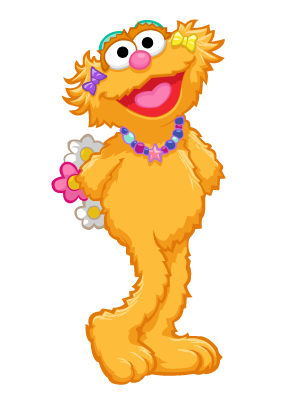
1979
Sesame Street's stated focus was accessibility to low-income children. By this point, more than 90% of children in low-income areas were watching the show.
Also that year, Linda Bove joined the Sesame Street cast as a deaf character who communicated through American Sign Language. Over time, other characters also began signing as they spoke.
1983
Zoe the muppet was introduced as a feminist role model for women behind the scenes as well as those watching the show. Previous female characters had minimal or weak roles, including Grundgetta, Oscar’s wife and mousey Prairie Dawn.
Thanksgiving, 1983
Sesame Street addressed death when actor Will Lee, who played Mr. Hooper, died in 1982. Sesame Street producers debated whether to cast a replacement or remove the role from the show. Opting for the latter, adult characters on the show took this opportunity to explain death to Big Bird, who didn't understand why Mr. Hooper wasn't coming back. The show caused a stir among parents who believed their children were still too young to be burdened by death.
1985
Snuffleupagus was finally introduced to the rest of the cast when a connection was drawn between the character and pedophilia. The writers worried that by discounting Big Bird's relationship with Snuffleupagus, the Sesame Street adults might be sending the message to children that they would not be believed if they reported sexual assault.
1987
The first wedding on Sesame Street. Maria, a Puerto Rican character, married Luis, another Latino character, as the priest explained marriage in terms that preschoolers would understand.
May 16, 1990
Jim Henson, mastermind behind the muppets and member of the original production team, died at the age of 53. All of the muppet performers joined together on the stage to sing a melody of tunes from Henson’s career.
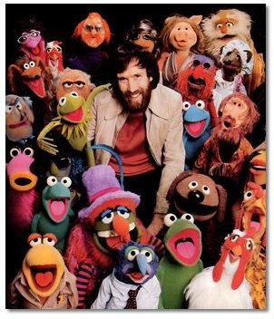
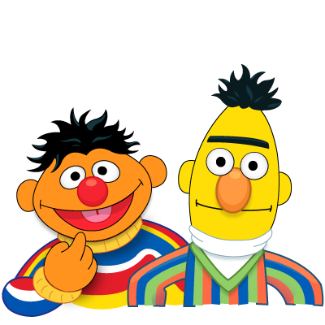
1993
Since the first season of the show, some audiences suspected that Bert and Ernie were more than roommates. In 1993, Sesame Street's producers stated that Bert and Ernie "did not portray a gay couple, and there were no plans for them to do so in the future. Like all the Muppets created for Sesame Street, they were designed to help educate preschoolers. Bert and Ernie are characters who help demonstrate to children that despite their differences, they can be good friends."
1999
Elmo had grown quite popular in recent years, having been a background character since the 1980s. Elmo’s World was introduced as a show-within-a-show with a “stream of consciousness” feel to it, as if a child’s squiggly crayon drawing was coming to life. Since the debut of his own segment, Elmo receives more screen time on Sesame Street than any other character. Elmo is an “exuberant, inquisitive, trusting, innocent, playful star.”
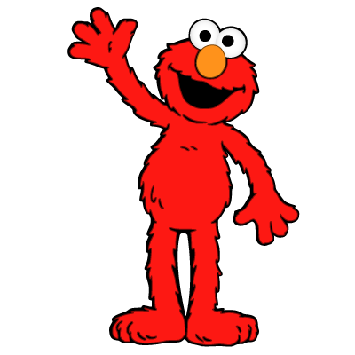
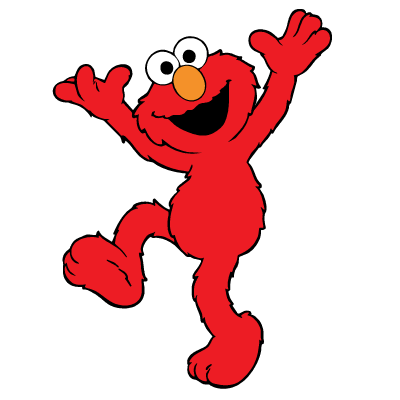
2001
Sesame Street addressed preschoolers’ fears and confusion about 9/11 when Elmo visited a fire station. The episode is dedicated to Lt. Robert Nagel, who died during 9/11.
2002
The South African edition of Sesame Street introduced Kami, a 5-year-old HIV-positive character whose mother died of AIDS. Critics immediately sent angry letters to producers, saying the show was promoting homosexuality and prematurely educating children on the disease. A few years later former President Bill Clinton appeared with Kami in a PSA about HIV/AIDS.
2005
Cookie Monster is joined by Veggie Monster. After years of chanting "me want cookie," Cookie Monster was given a new diet of fruits and vegetables. With childhood obesity on the rise in the U.S., Sesame Street began teaching kids about healthy eating. The show came out with the song "A Cookie is a Sometime Food" to teach kids that cookies shouldn't be eaten all the time.
2006
Abby Cadabby moved to Sesame Street from a land of fairies. She spoke a language called Dragonfly and was meant to represent immigrant children on the show. Her character also embodied the struggles of children with divorced parents who must switch homes every few days.
2010
In September, Sesame Street announced that it would not air a music video duet of Elmo and Katy Perry, and Perry's guest appearance was cut due to her semi-revealing dress. The music video, a revised version of Perry's hit "Hot 'N Cold," was released online, instantly sparking a controversy over the appropriateness of Perry's cleavage-showing outfit.
2014
Sesame Street's 45th season debuted on Sept. 15. The season boasts a "new, brighter look," adding more color to the set and adding a bicycle repair shop to the street. Roscoe Orman, who now plays the role of Gordon, hinted that Roosevelt Franklin may make a returning appearance in this season.
More than 75 million Americans have grown up watching over 4,300 Sesame Street episodes. The show is now broadcast in over 140 countries and is localized in some regions.
Over 70 muppets now make up the Muppet cast and they interact directly with the human students and adults on the show. Celebrity guests often visit to sing about a vocabulary word or teach a subject they are passionate about.To date Sesame Street has won more Emmy awards than any other television show - 8 Primetime, 108 Daytime and 1 Lifetime Achievement Awards.
Research guides most of the Sesame Street curriculum. The Children's Television Workshop conducts extensive studies to identify current issues for preschoolers and oberve changes in learning styles. SesameStreet.org provides a platform for children to interact with the characters and subjects any time they want, while providing resources to parents as well.
Other results from Sesame Street programming include:
American children who regularly view Sesame Street as preschoolers achieve high school grade point averages that are 16% higher than those who don't.
Bangladesh 4-year-olds who watch Sesame Street have 67% higher literacy scores than those who don't watch.
Egyptian 6-year-olds who frequently watch Sesame Street do twice as well on gender equality compared to those who watch less.
SOURCES: SesameStreet.org, Muppet Wiki, Street Gang: The Complete History of Sesame Street, 2008, images from Creative Commons, videos embedded from YouTube.
 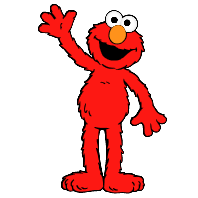
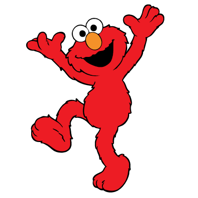
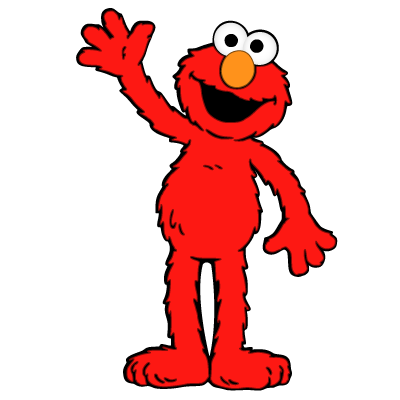
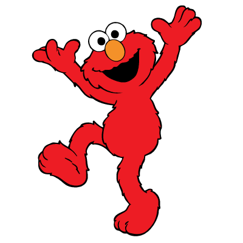